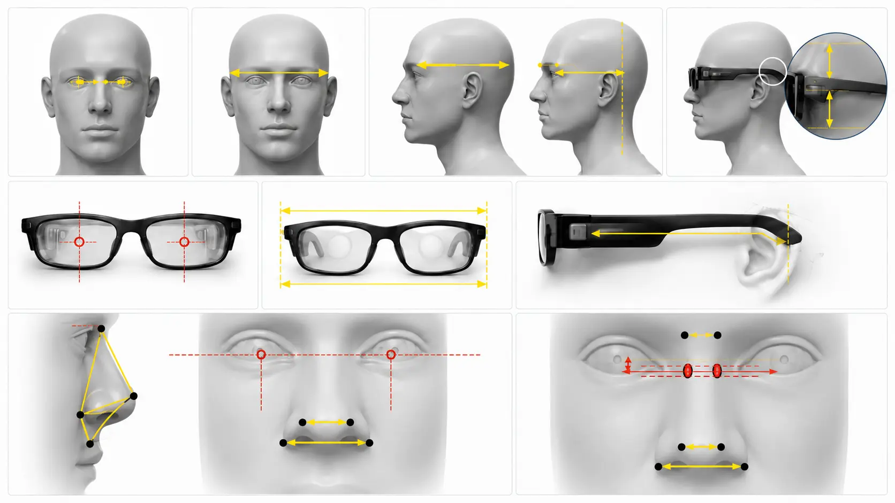

The data stopped at population distributions — one step short of a design decision.
The company already held head-and-face anthropometric data — NIOSH plus in-house measurement, organized into Western / Asian × male / female groups at the 5th, 50th, and 95th percentiles. But it lived as reference slides. When a customer asked how comfortably a frame would fit, sales could show a distribution table — not "what share of the target users this size actually covers."
This project built the missing layer between the two: a way to turn anthropometric data into something that answers a design question.
Two fit problems — the frame to the head, the UI to the eye.
The work splits into two tracks. One is physical fit: whether the glasses as an object fit the range of heads in a target market. The other is display UI: what the on-screen content can be on a see-through near-eye display without tiring the eye. A single internal tool sits under the first.
- Built the design-value-to-coverage analysis and visualization on top of NIOSH (n=3,997, five ethnic groups) and ANSUR II (2012, n=6,068), connecting percentile data that had stopped at population distribution to actual product decisions.
- Verified finished eyewear against 3D headforms at matching percentiles, resolving nose-bridge geometry that no single dimension can specify.
- Added the procedural layer the existing measurement protocol lacked — measurement sequence, step definitions, and the reconciliation rule for running 3D scanning and manual measurement in parallel.
- Converted the visual-angle specs in display-ergonomics standards into usable near-eye values from each headset's virtual-image distance and angular field of view, setting six display design rules and validating them experimentally.
- Implemented an internal web tool myself, pairing the measurement method with design-value-versus-coverage charts — so a process that meant rebuilding a deck per enquiry became something queryable.
Three sources, each covering what the others couldn't.
The first track is the frame as an object: does it fit the range of heads in the target market? That starts with the measurement data.
| Source | Sample | Role |
|---|---|---|
| NIOSH head-and-face survey (2003) | n=3,997; five ethnic groups — White, Black, Hispanic, Asian, Other (incl. Native American, Pacific Islander) | Baseline for head-and-face dimensions. The raw data is a free CDC download; the company separately purchased the 3D headform models. |
| ANSUR II (U.S. Army anthropometric survey, 2012) | n=6,068 | Interpupillary distance — a dimension NIOSH does not measure. |
| In-house measurement | Ongoing paid recruitment; I ran measurements for ~20 subjects | Closes the gap between NIOSH's US-skewed sample and an Asian target market. |
Source: Zhuang, Z. & Bradtmiller, B. (2005). Head-and-Face Anthropometric Survey of U.S. Respirator Users. Journal of Occupational and Environmental Hygiene, 2(11), 567–576.
In-house method. Recruited paid subjects and ran 3D scanning and manual measurement in parallel — scanning captures full geometry but blurs boundary calls, manual measurement is slower but unambiguous, so the two cross-check each other.
Added the procedural layer the existing protocol was missing: measurement sequence, a definition for each step, and the reconciliation rule for scanning and manual measurement side by side — so results from different measurers can be compared.
Given a design size, what share of the target population does it fit?
That question drove the method:
- Take the percentile distribution for the target group — Western / Asian × male / female.
- Overlay the customer's design value, and compute the covered interval plus the groups that fall outside it.
- Return a design-analysis deck and charts to the customer and the ID team.
Why a tool, not a deck. Rebuilding a deck per enquiry meant recomputing every time, with answers that couldn't be traced back. Made queryable, a changed design value shows its new coverage immediately. I implemented this internal web tool myself.
The internal tool isn't public, so this page describes it rather than showing screens.

Some geometry a number can't describe — so verify it in the physical world.
Head width and interpupillary distance take numeric specs cleanly; the shape of the nose bridge doesn't reduce to a single dimension.
For those regions, verification moves to physical comparison: place the finished glasses on a 3D headform at the matching percentile and read the fit directly. Numeric specs and physical verification each do what they're good at.

The display-ergonomics standards all assume something see-through glasses can't.
The second track leaves the frame behind and moves to the screen: what the on-screen UI can be on a see-through near-eye display. Three standards set the reference: ISO 9241-303 (ergonomic requirements for electronic visual displays), ISO 9241-392 (guidance on reducing visual fatigue from stereoscopic images), and ANSI/HFES 100-2007 (character height, viewing distance, luminance contrast).
All three share one premise: a controllable background luminance. See-through near-eye displays don't have it — the background is whatever the wearer happens to be looking at, an indoor ceiling or midday sun. And the standards specify visual angle (arc-minutes), not pixels.
So the values can't be copied across; they have to be converted — from each headset's virtual-image distance and angular field of view into actual values on that canvas, then validated by experiment.
Six display rules for lightweight glasses — derived, not looked up.
Six items are specified for lightweight-glasses UI:
- Type-size ceiling and floor
- Character-count limit at a given size
- Letter spacing
- Display position
- Margins
- Display duration
Each went through the same three steps — standard visual angle → conversion by imaging distance and angular field of view → experimental validation — rather than being read off a table. The specific values belong to the company.

Into real product validation — and a shared design vocabulary.
Applied to design validation for three lightweight-glasses products (Product A / B / C). Each design value was benchmarked against the percentile distributions to assess coverage in Western and Asian populations, with adjustment recommendations keyed to each product's intended market.
Human-factors data moved from per-enquiry reference decks to a tool the team can query, and the six display rules entered the design spec for lightweight glasses.
What stayed with me wasn't the data — it was the cross-disciplinary vocabulary around it. Mechanical engineers cared about manufacturing tolerance, ID about visual proportion, optical engineers about optical-path deviation; the hard part was translating between them into a shared evaluation frame. Quantified coverage changed the discussion too — from "this seems like it could work" to "this value covers this share of the target group; should we adjust?" For emerging hardware with no ready-made standard, building the method is itself part of the design work.